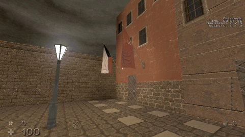

<!DOCTYPE html>
<html>
<title>A Review of the Hrot Demo (and The Full Game) | Gaming: Rediscovering History</title>
	<meta charset="utf-8">
	<meta content="OWLY.FANS" property="og:title" />
	<meta content="Because Sometimes video games are just bad" property="og:description" />
	<meta property="og:image" content="https://owly.fans/floppy.png">
	<meta content="#9B4F96" data-react-helmet="true" name="theme-color" />
    <meta name="keywords" content="owly, cass python, neocities, neozones, brit, uk, archive, site ran by a stud, england, wales">
	<link rel="shortcut icon" type="image/x-icon" href="../../../favicon.ico">
    <link rel="stylesheet" href="../../style.css">
    </html>
	    <body>
<p><a href="../">Back to index</a></p>
<h1>A Review of the Hrot Demo (and Full The Game)</h1>
<p></p>
<hr>
<p></p>
<p><div class="tag">

<h3>Definitely <em>not</em> an April Fool's &#xAB;joke&#xBB;</h3>
<p>Dude, like, trust me on this, I would never lie to you...</p>
	</div><p>

<div class="tag">

<h3>We're not linking to Wikia</h3>
<p>Due to it being <a href="https://youtube.com/watch?v=qcfuA_UAz3I">an ad fest of a website with bad user UI that no-one <em>really</em> likes</a>, we opted to not link to Wikia (or «Fandom» as it tries to be called), but rather use a website that mirrors the content of each page.</p>
	<p>We also link to a <a href="https://en.wikipedia.org/wiki/Nitter">Nitter</a> mirror of a Twitter post, if the mirror link on this page does not work, using <a href="https://status.d420.de">this website here</a> as a good place to find other Nitter instances that would be a helpful.</p>
	</div><p>
<em>Cass &#xAB;Owly&#xBB; Python, First of April 2024.</em>

<p>Being inspired by games like Quake, Hrot is a fast-paced FPS game set in Czechoslovak in the late 1980s. As the title suggests, I only played the demo for the game, so a single level is all you will get out of this - if ya want more, buy the whole thing! Despite only being one level, the game throws a lot at the player. At the start, you spawn at the gates of <a href="https://en.wikipedia.org/wiki/Vy%C5%A1ehrad">the real-life Vyšehrad castle</a>, a location where you are immediately greeted by creepy men in full-body hazmat suits that will shoot at you, uh, in-game not real life.</p>

<p>Not going to lie, I found this level oddly hard on the normal skill (still beat it!), so my first time playing the starting room, my health went from 100 to 30 - oh dear!</p>
							<p><figure>
        <center></center>
				<figcaption><p>The starting room that is based upon Vyšehrad, a building found in Prague that is more of a fort.</p>
		</figcaption>
	</figure></p>
<p>All of the enemies on this map look unique in their own creepy way. We have the standard human type that will shoot at you with guns like the pre-mentioned <a href="https://antifandom.com/hrot/wiki/Hazmat_Suit">hazmat suit-wearing <em>Liquidators</em></a>, others like <a href="https://antifandom.com/hrot/wiki/Smaskou">smaskous</a> and <a href="https://antifandom.com/hrot/wiki/Skapuci">skapucis</a> (the latter two really remind me of something you would have seen in Doctor Who's <a href="https://tardis.wiki/wiki/Genesis_of_the_Daleks_(TV_story)"><em>Genesis of the Daleks</em></a>). We also have other human-like monsters like &#xAB;<a href="https://antifandom.com/hrot/wiki/Kejdovec">kejdovec</a>&#xBB; who I know has been compared to <a href="https://quakewiki.org/wiki/Ogre">the ogre from Quake</a> - and yeah, I can see that. They are both fattos who shoot grenades at you and will damage the player if they get too close.</p>

<p>Oh boy, we also have animal monsters! During the map, you will encounter a <a href="https://antifandom.com/hrot/wiki/Horse">gas-mask-waring horse</a> that will jump around (I found shooting at them rather than using rockets worked best). The weird horse really looks like it was inspired by World War I photos of horses with gas masks on that you would have seen <strong>if you paid attention at school!</strong> Very out-there idea for a monster, but the beast was as fun as it was creepy. Other monsters are stuff like <a href="https://antifandom.com/hrot/wiki/Skull_Spider">large spiders</a> (something that you can opt to replace with <a href="https://antifandom.com/hrot/wiki/Rat">rats</a> in the options menu) and <a href="https://antifandom.com/hrot/wiki/SUP">dogs</a> (or «SUP» as they are called in-game, standing for Samostatn&#x11B; &#xDA;to&#x10D;&#xED;c&#xED; Pes (Autonomous Attacking Dog)) that will bite you if they get too near... or I guess they <a href="https://youtube.com/watch?v=bmVGwOP_zi8">should be called puppyats</a> <span aria-hidden="true">(<a href="https://yewtu.be/watch?v=bmVGwOP_zi8">mirror</a>)</span>? Anyway, human monsters are harder to kill than animal ones, plus they will shoot at you and I think that there is only <a href="https://en.wikipedia.org/wiki/Hitscan">hitscan</a>, making them a priority target to get first.</p>
			
<p>One of my biggest gripes with Hrot is to do with the monsters. While there is a whole roster full of them to shoot down (and in fact, some monsters only show up on a single level as Easter eggs), it's not possible for them to infight at all. What might be one of the most fun things in other games like <a href="https://doomwiki.org/wiki/Doom">Doom (1993)</a> is that once you <a href="https://doomwiki.org/wiki/Monster_infighting">realize that you can make the monsters fight each other</a>, it makes saving ammo a lot easier. As I said, this is just not a thing in Hrot, and honestly, in the full game, there are sections where you are really running low on ammo and that's just not fun gameplay. Maybe this could be fixed by having a more of an O.P. melee weapon by your side that can't ever run out?</p>

<p>Back to the demo, <a href="https://antifandom.com/hrot/wiki/E1M6:_Vysehrad_Castle">the level</a> was easy to understand and I knew what direction I should head in next, plus the music, while not as exciting as something you would hear in other throwback games like «<a href="https://en.wikipedia.org/wiki/Dusk_(video_game)">Dusk</a>» (Hrot has been called «<a href="https://twitter.com/DaveOshry/status/1272918900125007872"><yell>Slav Dusk</yell></a>» <span aria-hidden="true">(<a href="https://nitter.privacydev.net/DaveOshry/status/1272918900125007872">mirror</a>)</span> by Dave Oshry, creator of Dusk and fan of the game), it was still good in its own ominous way and really added to the atmosphere of the map.</p>

<p>Overall, the demo for Hrot was a lot of fun, and look, while this was only just a single level, I can really feel like I would be an idiot to not buy the whole game... okay, and then I bought it on Steam lol</p>

<p>Okay, guys. The full thing is a great game, nothing <em>groundbreaking</em>, but still undoubtedly a lot of fun to play through... Cass when <script type="text/javascript">
var images = [
'she jumps',
'he jumps',
'they jump',
]
document.write(images[Math.floor(Math.random() * images.length)]);
</script> the gun. Let's go back a bit, so, one thing that I brought up in the past section for this review was that some people, namely David Szymanski, have called Hrot «Slav Dusk». The game certainly has been compared a bit to Dusk... and... yeah, I mean, I feel like if New Blood never published Dusk in 2018, then I have my doubts that Hrot would have been as well known as it is, even if it (from what I can understand) does have a small audience (but saying that, I feel like Hrot will be seen as a cult classic in the <span aria-hidden="true"></span>future<span aria-hidden="true">)</span>.</p>
		
		<p><figure>
        <center></center>
			<figcaption><p>Screenshot from the level «<a href="https://antifandom.com/hrot/wiki/E2M4:_Factory_Farm">Factory Farm</a>». In this map especially, I found it easy to run low on ammo, even when I was being conservative with it.</p>
		</figcaption>
	</figure></p>

<p>Much like Dusk, each level feels unique and fun in its own way, I especially liked the beginning of chapter three which started off in such a strange direction. I really enjoyed the creepy vibe that Spytihněv (the dev) made, from the uncanny settings of the city to the wonderfully bizarre boss fights that made no sense. Dusk itself could be uncanny and frightening at times, but the way that it did it was more on the lines of placing the player in a situation that was farfetched and a fantasy, Hrot on the other hand creeps you out by forcing you to play in a level that are oddly <a href="https://en.wikipedia.org/wiki/Liminal_space_(aesthetic)">liminal</a> and creepy in the way that this area was a city, but now it's all but gone.</p>

<p>Another thing that I want to praise the game for is the fact that it's not running on Unity... it's not Unreal, not even any of the id Tech ones, but a homemade engine. I can say that I would have no idea where to even begin with making something like that, so hats off.</p>

<p>Of course, by making it homemade, you would think that it would be full of bugs, but surprisedly... no, the engine is very well made and I can only think of two examples of something wrong with it; first is that sometimes when you shoot an enemy that is at the bottom of a wall, they can <yell>NoClip</yell> to the top, and second is when <a href="https://antifandom.com/hrot/wiki/E3M5:_Incinerator">I was fighting a miniboss</a> and I chucked a grenade at them, making them, somehow, clip through to the room below. And that's it! That's the only two issues. I think that's really impressive, especially for a game that, as far as I can tell, was made by one person.</p>

<p>Finishing the game kind of wasn't that hard to do, only taking five hours - I don't know why it took me only that amount of time, perhaps I am secretly an amazing gamer,,, or it's due to me playing on easy. Yeah, I wrote that the demo was quite challenging on the normal skill, and <em>look</em>, you may be smirking at me writing that I played on easy, but let's just say this, <em>if I'm not meant to play on that skill, why is it in the game?</em> Also, isn't the point of games to have fun? Besides, I feel like I made the right choice, as easy was the perfect skill level for me, not too difficult and not too hard, but the game did kick my ass at times </p>

					<p><figure>
        <center></center>
				<figcaption><p>In the <a href="https://antifandom.com/hrot/wiki/E3M8:_Epilogue">last level of Hrot</a>, the player needs to fix a clocktowner, once this is done, the <a href="https://en.wikipedia.org/wiki/Flag_of_the_Soviet_Union">Soviet Union flag</a> is autoimatically taken down, with only the <a href="https://en.wikipedia.org/wiki/Flag_of_the_Czech_Republic">Czech flag</a> flying.</p>
		</figcaption>
	</figure></p>
			
<p><span aria-hidden="true">Pfff,</span> is there anything else to say? Umm, well I kind of hope that there could be deathmatch or coop added, that would be really fun - Dusk deathmatch (called DUSKWorld) was a lot of fun to play, although I think Dusk was made in Unity, so Spytihněv would need to write a whole new section to the code and I feel like writing netcode would be horrible, but I know that I would have <em>a lot</em> of fun when I get to frag my friends.</p>

<p>Plot spoiler ahead, so don't read from here if you want to find out independently. Okay. So the end screen for each episode was literally just a recipe on how to make some food. I legit found this so funny in a bizarre way. Like, I just beat your game and you're telling me how to make eggs in aspic?? I guess it's unique, certainly, but, I don't know, I guess it would be cool if there was some basic story in the game... Although saying that, I don't know if I would really <em>care</em> for a story, mostly as my dyslexic ass would skim it at best and skip it at worse, oh yeah, I have dyslexia by the way, I don't know if you knew that, but I think it is funny that I write a lot on this website despite not knowing how to spell a lot of words, but hey, if Cher can make a musical career that's lasted since the 60's while also having dyslexia, I can write reviews for the Internet.</p>

<p>Back to Hrot, it can get away with not having a clear story as it allows your imagination to run wild with what you think could have happened to this city thanks to its environmental storytelling. Personally, I think that the game follows a survivor of the <a href="https://en.wikipedia.org/wiki/Chernobyl_disaster">Chernobyl disaster</a> in an alternative universe where the event went a lot worse and the city that they are in got infected by radioactive stuff and caused everyone and the animals to go berserk. I also think that it's about the fall of the USSR as in the final level, your mission is to fix a clock tower that was seen <a href="https://antifandom.com/hrot/wiki/E3MS:_Rathaus">in a past level</a>. The entrance to the clock tower has two flags adorned it; the Czech Republic flag and that of the USSR. Once you do fix the clock and go outside, you'll find that the Soviet flag has been taken down and fireworks start to fly. If this game is about anything, it is about the dying days of the USSR and the effects of nuclear disaster.</p>
			
			<p>There are also other examples of the failure of the USSR in the game, such as with the literal fall of their space program when we see a <a href="https://antifandom.com/hrot/wiki/Cosmonaut">cosmonaut fall from the sky to his death</a>. With that said, Chernobyl happened in 1986 while the <a href="https://en.wikipedia.org/wiki/Dissolution_of_the_Soviet_Union">dissolution of the USSR</a> was in late 1991, so it's not that out-of-this-world to suggest that this game is about these two things as there would only be a, at max, a five-year gap between these two things, and arguably, the death of the Soviet Union would <a href="https://en.wikipedia.org/wiki/Estonian_Sovereignty_Declaration">begin in 1988 with the Estonian Sovereignty Declaration</a>.</p>
			
			<p>While I don't know much about the Hrot dev, <a href="https://antifandom.com/hrot/wiki/Spytihnev">his wiki page says that he started playing games in the 1980s</a>, so he would have been there when the USSR became Russia, so this isn't just me picking things out of thin air.<p>
			

<p>My head hurts thinking about the USSR...</p>

<p>Anyway, overall, Hrot was a very fun game to play, I kind of wished that there was more and I will be paying attention to what Spytihněv will be coming out with next as I have faith that it will be good.</p>
			
<p>Links</p>
	<ul>
	<li><a href="https://www.gog.com/game/hrot">HROT on Good Old Games</a> (<a href="https://www.gog.com/game/hrot_demo">download demo</a>)</li>
	<li><a href="https://store.steampowered.com/app/824600/HROT">HROT on Steam and download to demo</a></li>
</ul> 
			
<p></p>
	<hr>	
<p><strong>Want to support OwlyFans? <a href="/nft/">See our NFTs</a>!</strong>
</p>

			

	
	<p>Copyright 2024 - <script type="text/javascript">
var today = new Date()
var year = today.getFullYear()
document.write(year)
</script> by Cass &#xAB;Owly&#xBB; Python, licensed under the <a href="../../../license/fopl-mdp-v2" title="The Freedom Owl Public License: Modifications, Distributions, and Private Use Version 2" alt="The Freedom Owl Public License: Modifications, Distributions, and Private Use Version 2">FOPL-MDP V.2</a>. Please see <a href="../../../humans.html">humans.html</a> for full credit and thanks. Peace and love.</p>
<p><font color="black"><center>&#x2605;</center></font></p>
<p>
<div style="text-align:right">
<a href="http://bytemoth.nfshost.com/cd5k-net/tau">&tau;</a>
</p>
</div>
<p></p>
	<script src="../../../ruffle/ruffle.js"></script>
<script src="../../../script.js"></script>
    </body>
</html>